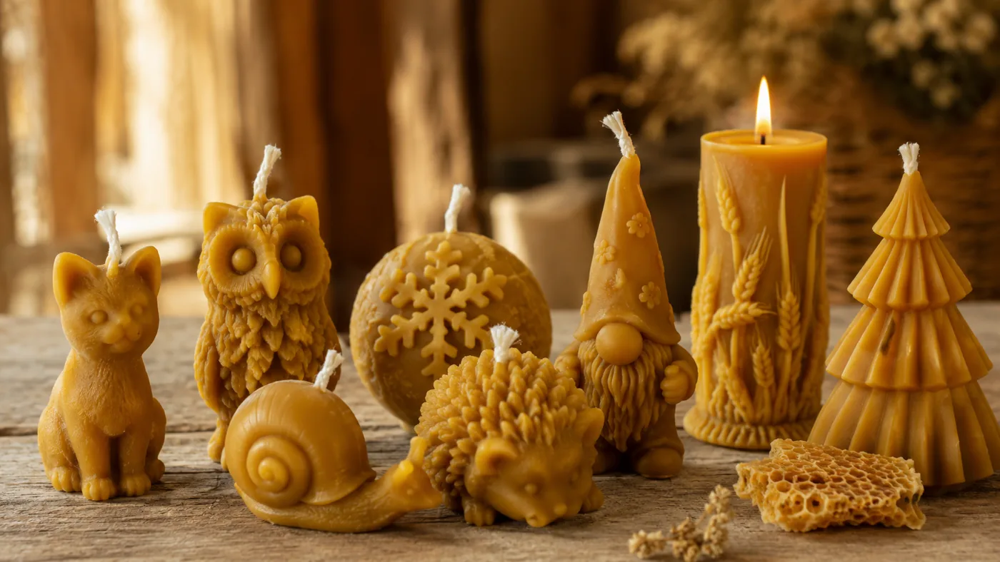
À côté du miel, nos bougies racontent une autre histoire : celle de la cire, un matériau que les abeilles fabriquent elles-mêmes et que rien, chez nous, ne gaspille.
La cire, un produit du corps de l'abeille
La cire n'est pas récoltée dehors : elle est sécrétée par l'abeille elle-même. Les jeunes ouvrières, vers 12 à 18 jours, possèdent huit glandes cirières sous l'abdomen qui produisent de minuscules écailles translucides. L'abeille les malaxe avec ses mandibules pour bâtir les rayons et operculer le miel.
C'est un matériau coûteux pour la colonie : produire un kilo de cire demande aux abeilles de consommer de l'ordre de six à huit kilos de miel, et près d'un million de petites écailles. Autant dire qu'on ne la jette pas.
La cire de corps de ruche, sortie du circuit
Nos bougies sont faites avec la cire de corps de ruche. Chaque année, on renouvelle des cadres : les vieux rayons, qui ont vu passer des générations de couvain, brunissent et ne peuvent plus être remis dans le circuit du miel. Cette vieille cire, on la récupère.
Cette vieille cire, nous la travaillons nous-mêmes : nous la faisons fondre, la coulons dans nos moules, et elle revient sous forme de bougies. La cire propre, elle, part chez un cirier — un artisan qui nous refait des cadres neufs à partir de cire épurée. Rien ne se perd : la cire boucle la boucle.
Pourquoi une vraie bougie en cire d'abeille
Contrairement aux bougies de paraffine, issues du pétrole, la cire d'abeille est une matière naturelle. Elle a un point de fusion élevé, brûle donc lentement, d'une flamme calme, et dégage en chauffant un léger parfum de miel — celui de la ruche dont elle vient. Ours, hérisson, chouette, escargot, sapin, santon… nos moules changent au fil de l'année.
Une bougie en cire d'abeille, c'est un peu de la ruche qui continue de vivre chez vous. Retrouvez tous nos modèles sur la page produits.
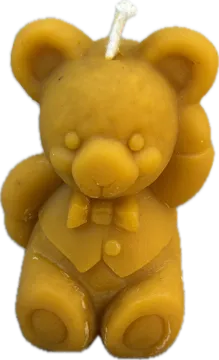
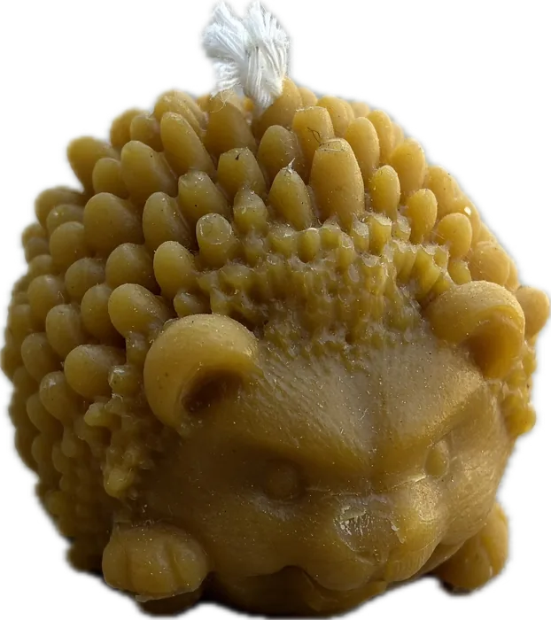
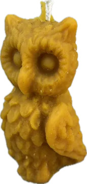
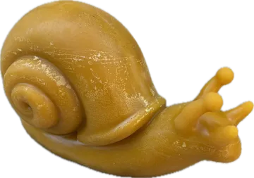
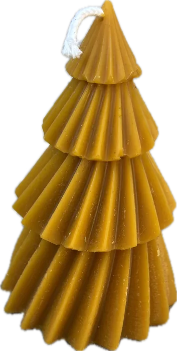
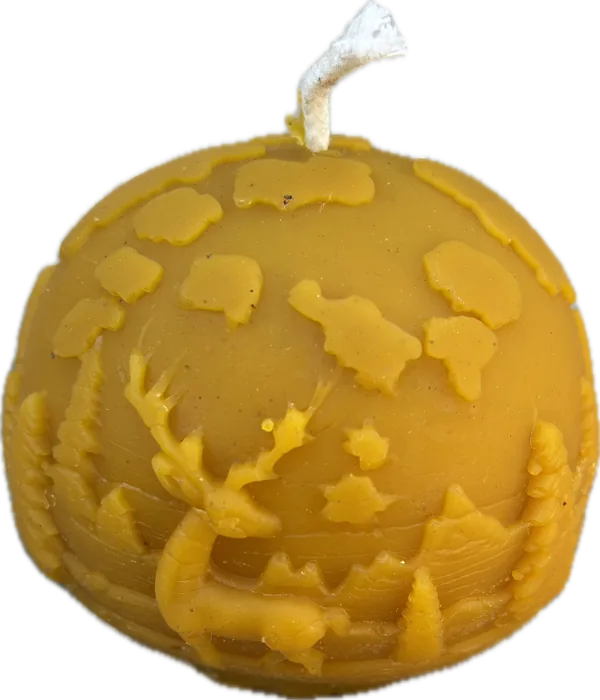
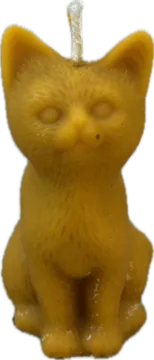
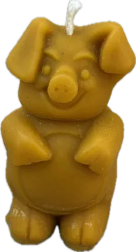
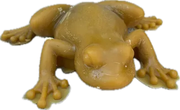
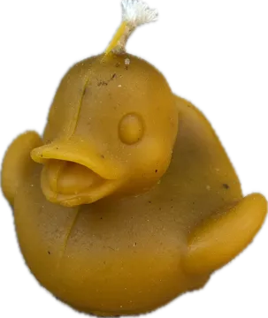
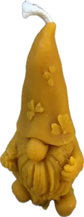
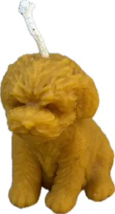
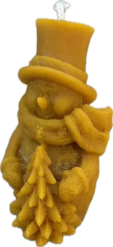
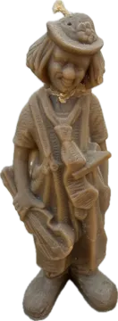
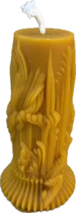
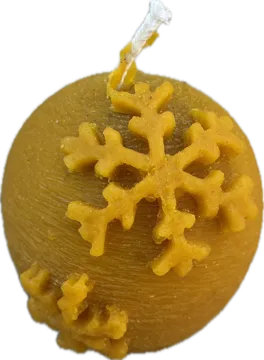
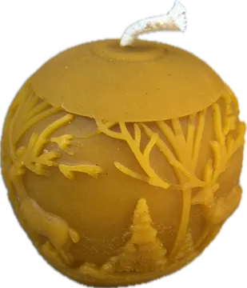